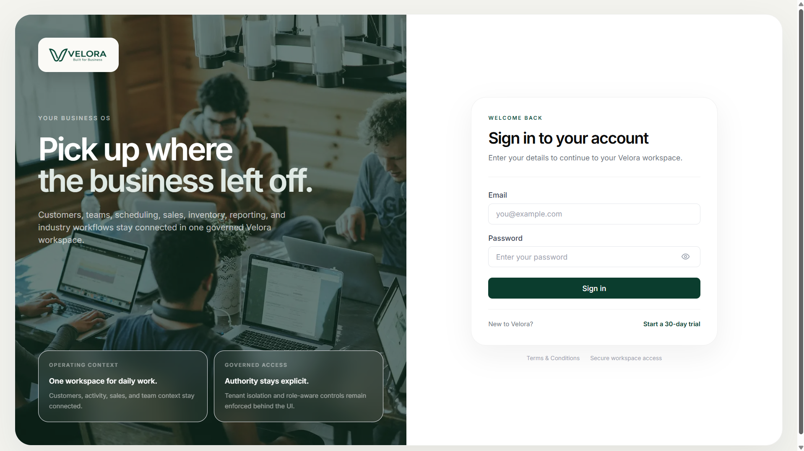
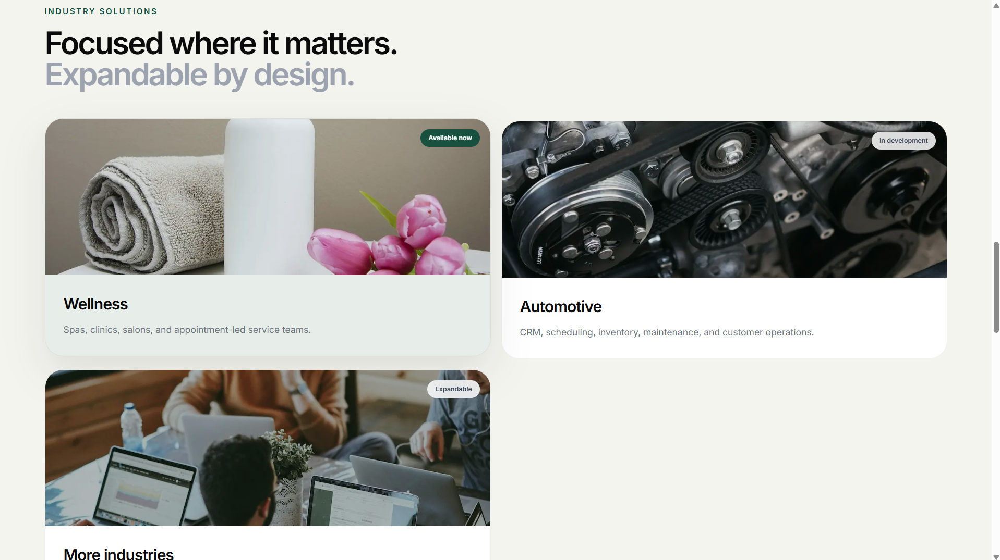

Velora · Dashboard
PRODUCT
WORKSPACE ACCESS

INDUSTRY SOLUTIONS

01 / 02
Velora
Flagship SaaSA Business OS designed to bring day-to-day operations into one clean workspace.
Velora covers bookings, customers, staff, services, POS, reports, permissions, memberships, loyalty, commissions, inventory, and multi-branch operations—built for service businesses and expandable across industries.
- Product
- Business OS
- Model
- Multi-tenant SaaS
- Stack
- Next.js · NestJS · Supabase
BookingsPOSReportingRBACMulti-branch